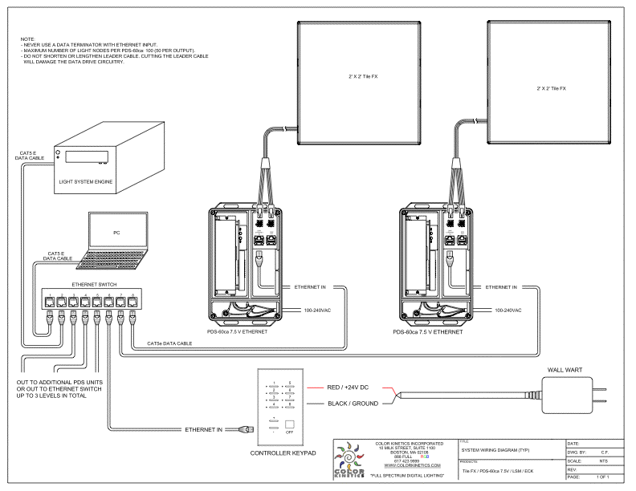

Interactive Nanotext Imagery:
A Visual Installation for the California Nanosystems Institute
Concept
In our conceptual design we aimed to reflect and unite three diverse areas: CNSI and nanotechnology, education and interdisciplinary research in the university as well as the MAT program, and the surrounding physical location. We also wanted to take Robert Venturi's style and ideas for the location into account.
Our proposed display consists of large bars moving from left to right. These bars not only serve to tie in the design with the existing architecture but conceptually continue the design of the building out into electronic space. These bars consist of tiny text from a range of different disciplines: nanotext. This visually reflects the way in which large, often simplistic looking objects or cultural beliefs are composed of many smaller components while also incorporating the theme of nanotechnology. As the bars move across the screen, they break down into a variety of words and images.
This mirrors the role of the university: to break down 'simple' beliefs and ways of knowing to create new cultural and academic objects. The words and images themselves will reflect all of the above themes. In addition, the speed and quality of their breakdown as well as the aesthetic options (e.g. color, saturation, brightness) will reflect incoming real-time data about the physical location. The style of the words, bold and commercially inspired, will hold true to Robert Venturi's ideas.
Design Images

Morphing bars of text
Technical description and references
1) Input
---Surf cam: Motion
Capture of wave peaks from a camera at nearby Campus point controls the
speed and frequency of moving bars in direct proportion
---Light Sensors: ambient light levels determine brightness of display;
colors of background and bars change in inverse proportion to time of
day
---Web Data: readings obtained from online sources (NOAA, etc.) provide
real-time control of various factors:
Wind speed = density of fragments upon breakup
Barometric pressure = horizontal motion of resultant fragments
Humidity = color changes of individual bars
Precipitation % = vertical motion of resultant fragments
Air temperature = saturation % (number of bars until full image realization)
Water temperature = decay % (number of bars until full image erasure)
Avg. Wave Height = Granulation amount of particles
2) Brain:
---motion tracking
of web cam
---data mapping (control of factors, using randomness)
---timing engine
---image/text database (incl. dynamic content)
---visual output generation
3) Output:
---Physical Wall
---LCD screen (30'x30')
Cost Estimate:
---Computers $25k
---Screen $375k
---Programming $50k
---Labor $?
TOTAL: $450k plus installation

Links
Further
project information
California NanoSystems Institute
UCSB
Surfcam
National Oceanic and Atmospheric Administration
Robert Venturi
Venturi's original proposal
Assignment
description
Class
site
Team
Bo
Bell, Music/MAT: Technical, I/O, Installation
Hyunkyung Ji, MAT(VA): Content,
Animation
Eileen Koven, MAT (Emusic):
Concept, Presentation
Nicole Starosielski, Film Studies:
Concept, Animation